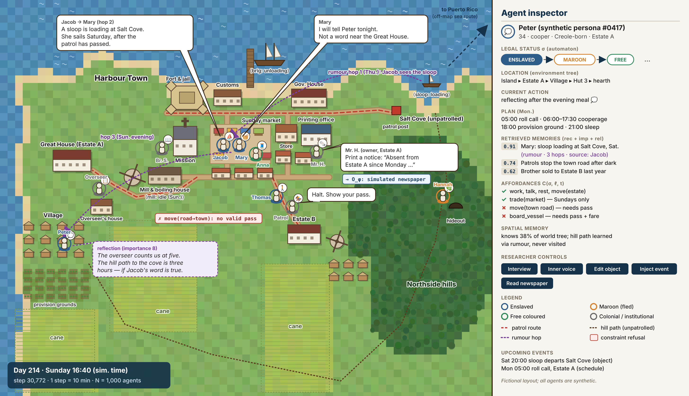

The island is a composite. It should feel right for the Danish West Indies, and match no real estate.
The map
Two sugar estates, a harbour town (fort, market, mission, printing office, wharf), the northside hills, and an unpatrolled cove. Agents are uniform tokens; colour is legal status only.

Does this layout feel historically reasonable, without copying a real plantation?
Rules of movement
These are the constraints the sandbox enforces. For each: agree, revise, or reject.
When would an owner print a notice?
Not every absence was advertised. How often, roughly, would you expect a notice for the following? Slide from “almost never” to “almost always”.